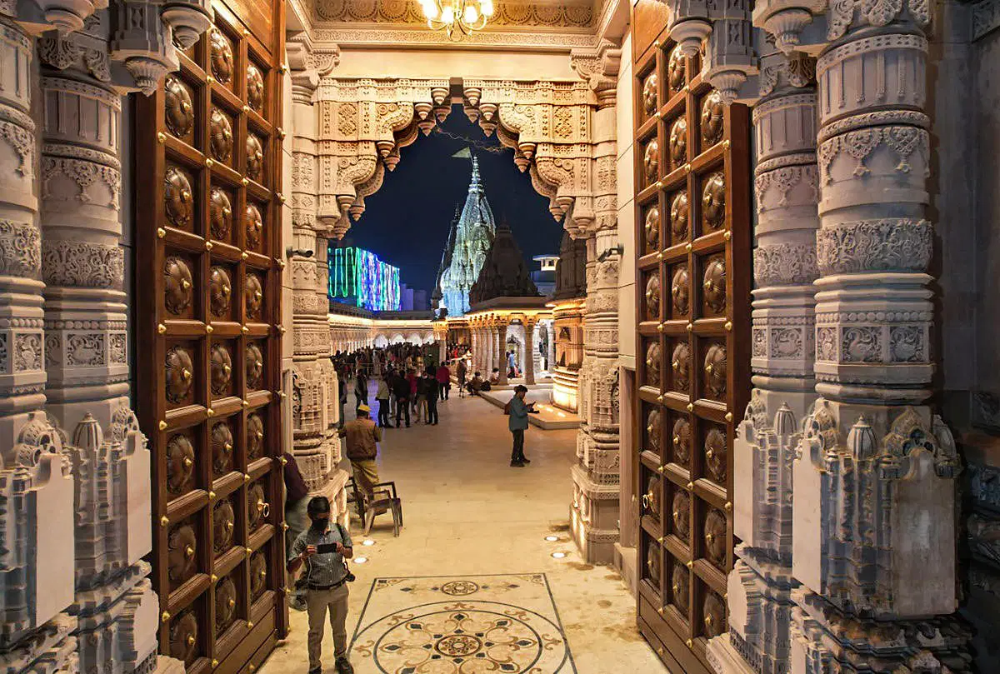
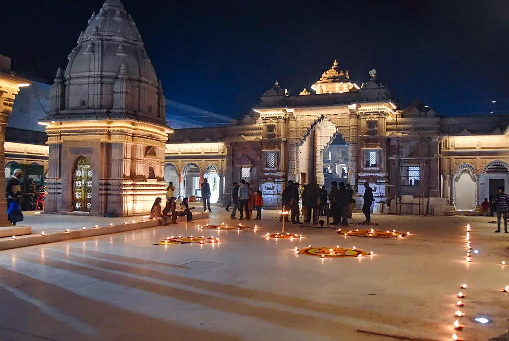
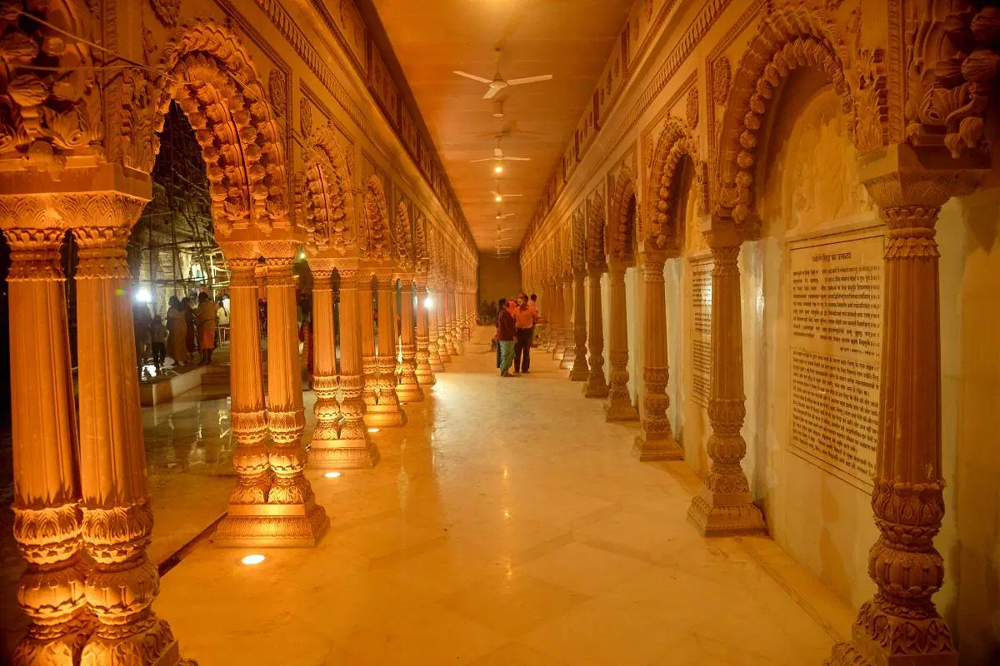
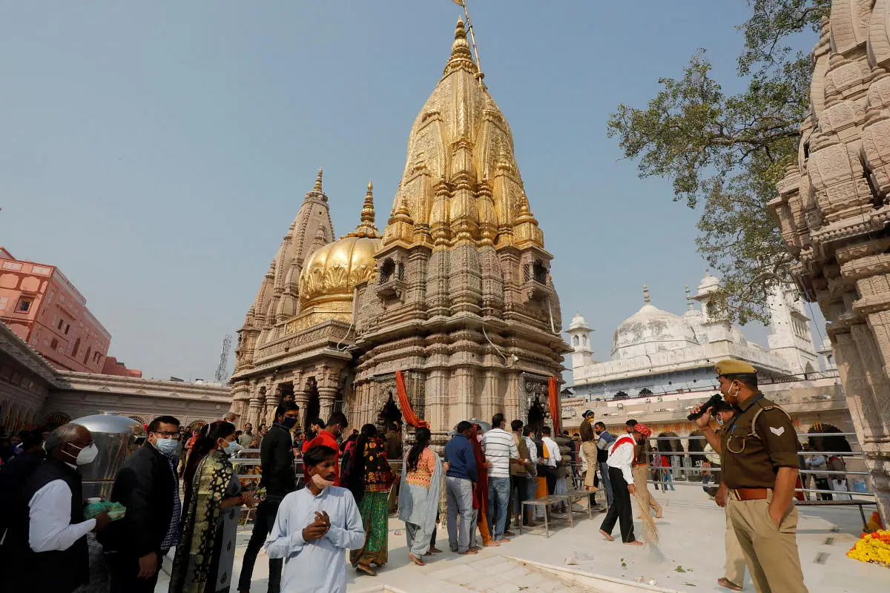
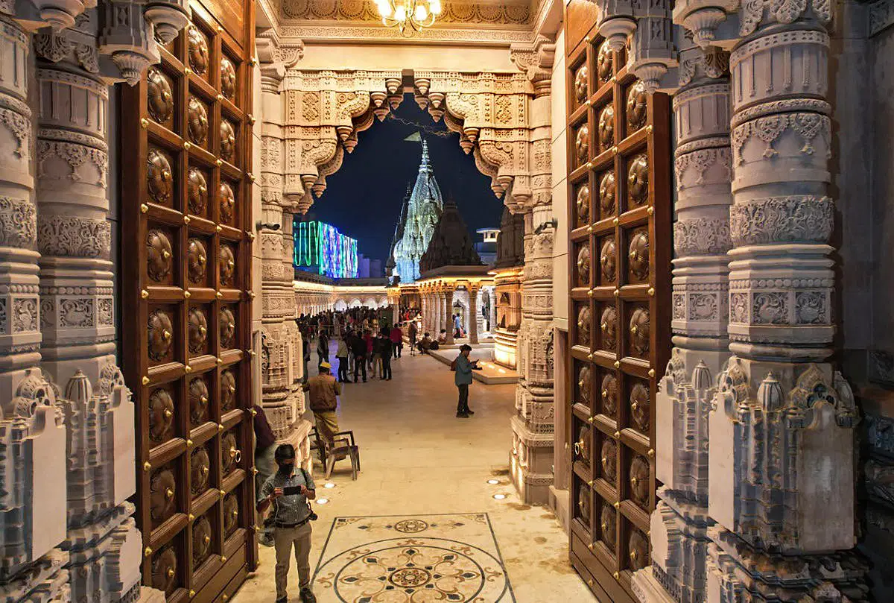
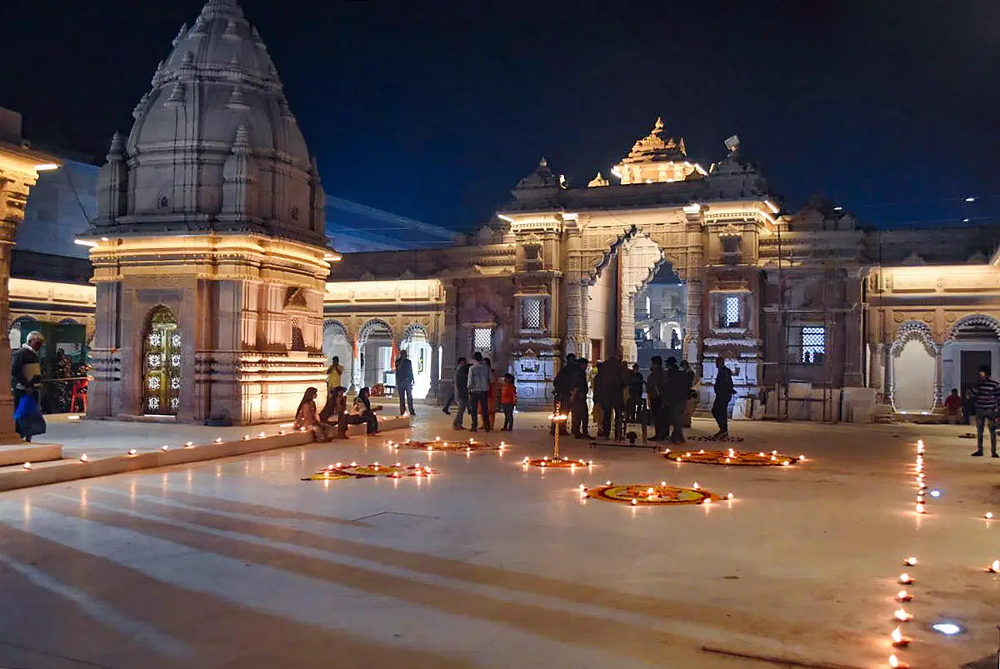
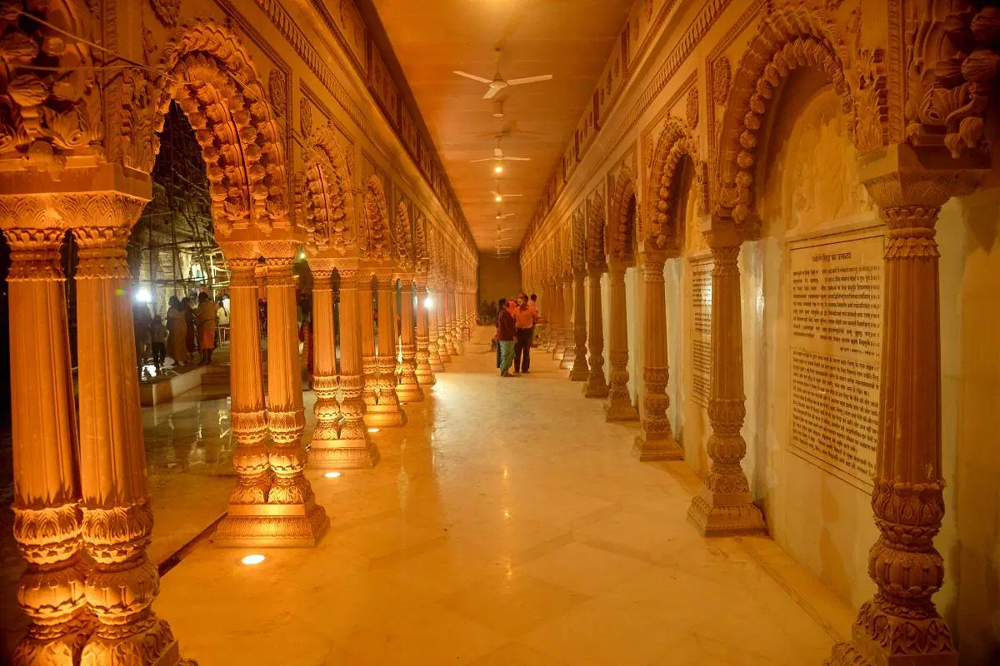
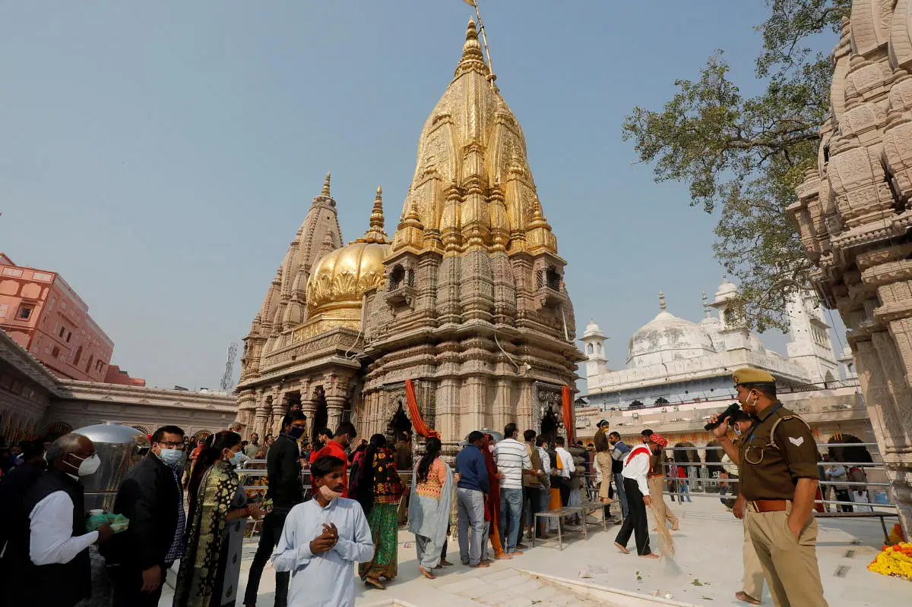

Kashi Vishwanath Temple , Uttar Pradesh

Located in the oldest surviving city of the world- Varanasi, Kashi Vishwanath Temple is one of the most visited temples in India. It is the most revered of the twelve jyotirlingas located in India.
The temple stands in all-might at the western bank of River Ganges and teaches mankind the true meaning of life and death. A one-time visit to the Kashi Vishwanath Temple is equivalent to the visit to other eleven jyotirlingas of Lord Shiva.
This heavenly abode is visited by many distinguished personalities such as Adi Shankaracharya, Swami Vivekananda, Goswami Tulsidas, Gurunanak among others.
A visit to this sacred temple is believed to be one of the ways to attain ‘moksha’ (ultimate liberation of the soul).
History
The temple's history is marked by a series of destructions and reconstructions:
- Ancient Period: The original temple is believed to have been built by King Vikramaditya around 2500 years ago.
- Medieval Era: In 1194, the temple was destroyed by Qutb-ud-din Aibak. It was subsequently rebuilt in 1230 during the reign of Sultan Iltutmish. However, it faced further destruction during the rule of Sikandar Lodi (1489–1517).
- Mughal Period: The temple underwent reconstruction efforts during Emperor Akbar's reign, with contributions from Raja Man Singh and Raja Todar Mal. In 1669, Emperor Aurangzeb ordered its demolition, leading to the construction of the Gyanvapi Mosque on the site.
- 18th Century Revival: In 1780, Maharani Ahilyabai Holkar of Indore rebuilt the temple adjacent to the mosque, restoring its prominence as a major pilgrimage site.
Over the centuries, the Kashi Vishwanath Temple has been a beacon of Hindu spirituality, attracting saints like Adi Shankaracharya, Swami Vivekananda, and Guru Nanak. Today, it stands not only as a symbol of devotion but also as a testament to resilience and faith.
How to reach
By Air
- The nearest airport is Lal Bahadur Shastri International Airport (VNS), located about 25 km from the temple.
- From the airport, you can take a taxi, cab, or bus to reach the temple.
By Train
- The nearest railway station is Varanasi Junction (BSB), approximately 4 km from the temple.
- Other nearby stations:
- Manduadih Railway Station (MUV) – 6 km
- Banaras Railway Station (BSBS) – 6 km
- From the railway station, you can take an auto-rickshaw, cycle rickshaw, or taxi.
By Road
- Varanasi is well-connected by NH2, NH7, and NH56.
- You can take state transport buses, private buses, or taxis from major cities like Lucknow (320 km), Prayagraj (120 km), and Patna (220 km).
- Local transport like auto-rickshaws, cycle rickshaws, and e-rickshaws are available for commuting within the city.
Gallery
 






